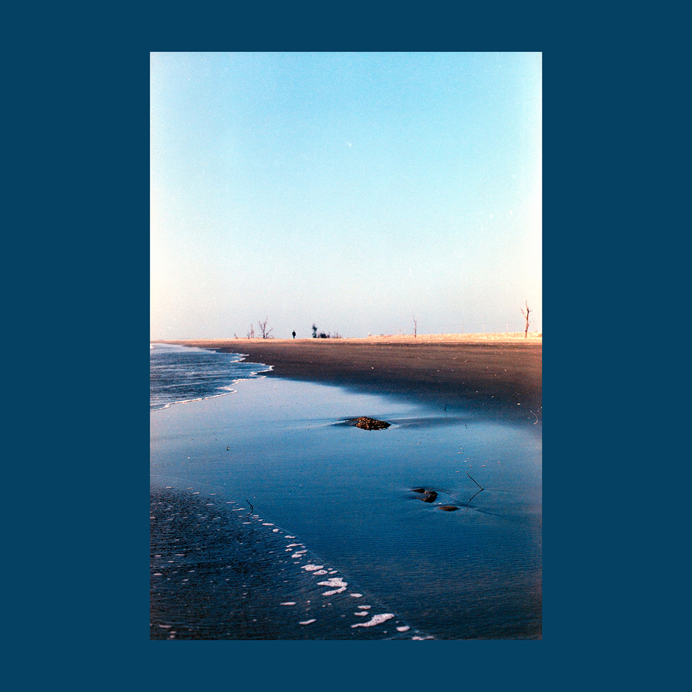
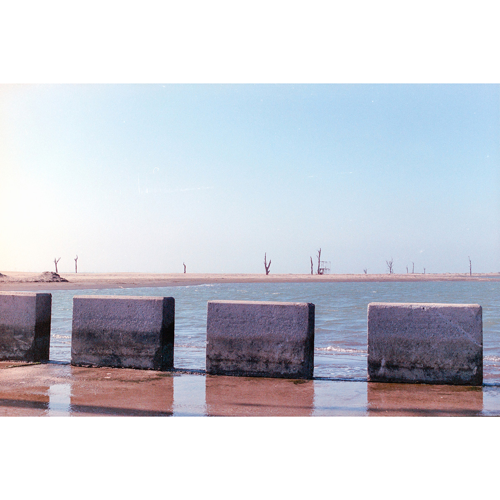
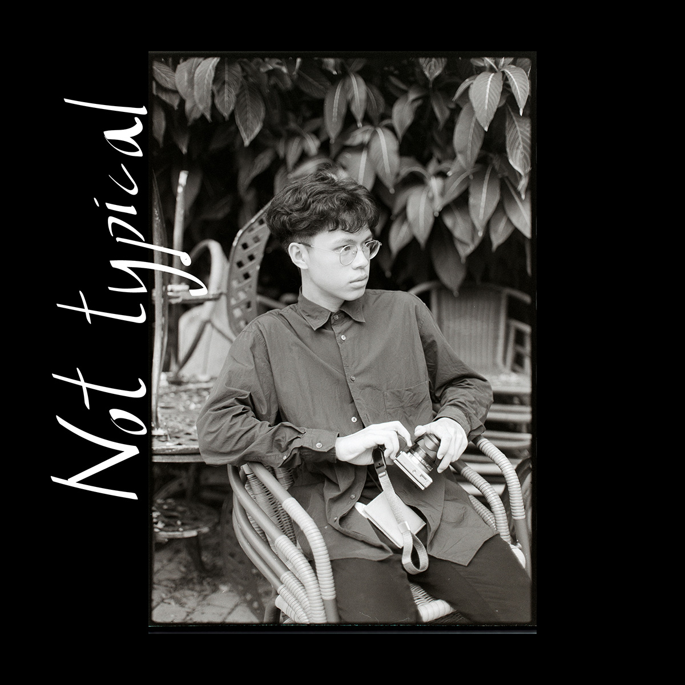
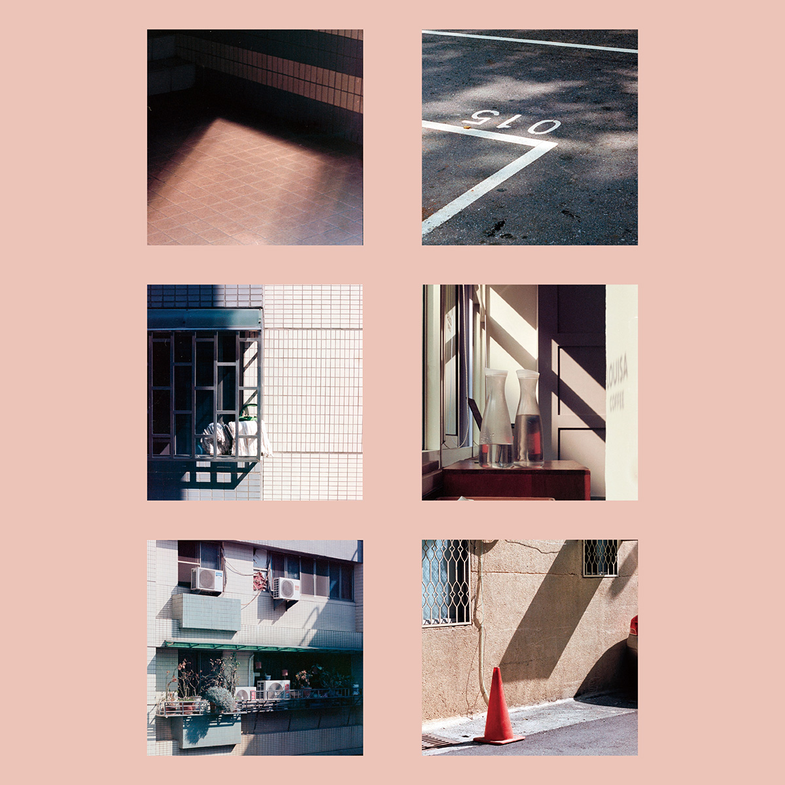
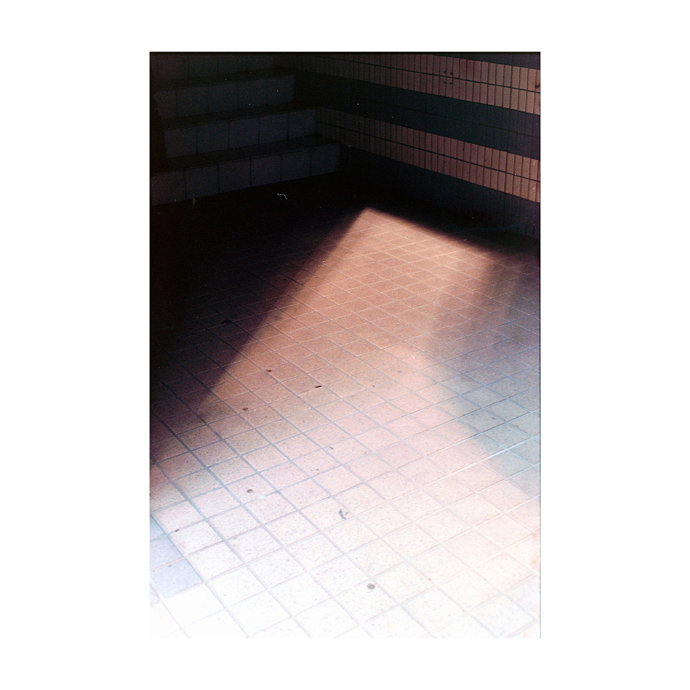
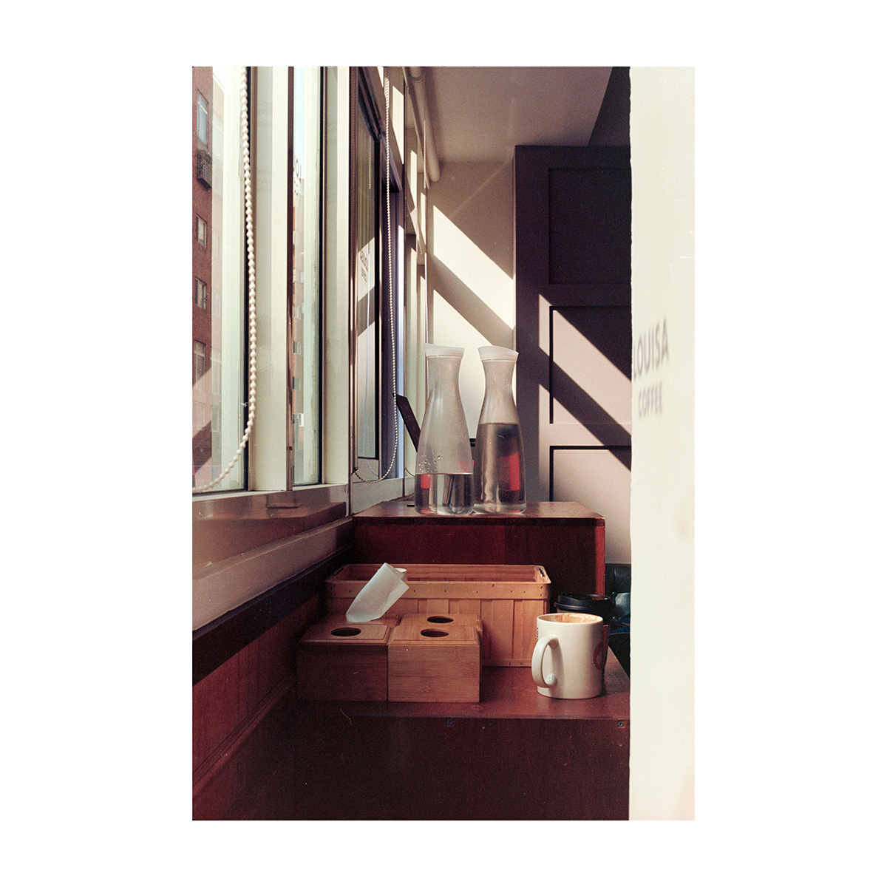
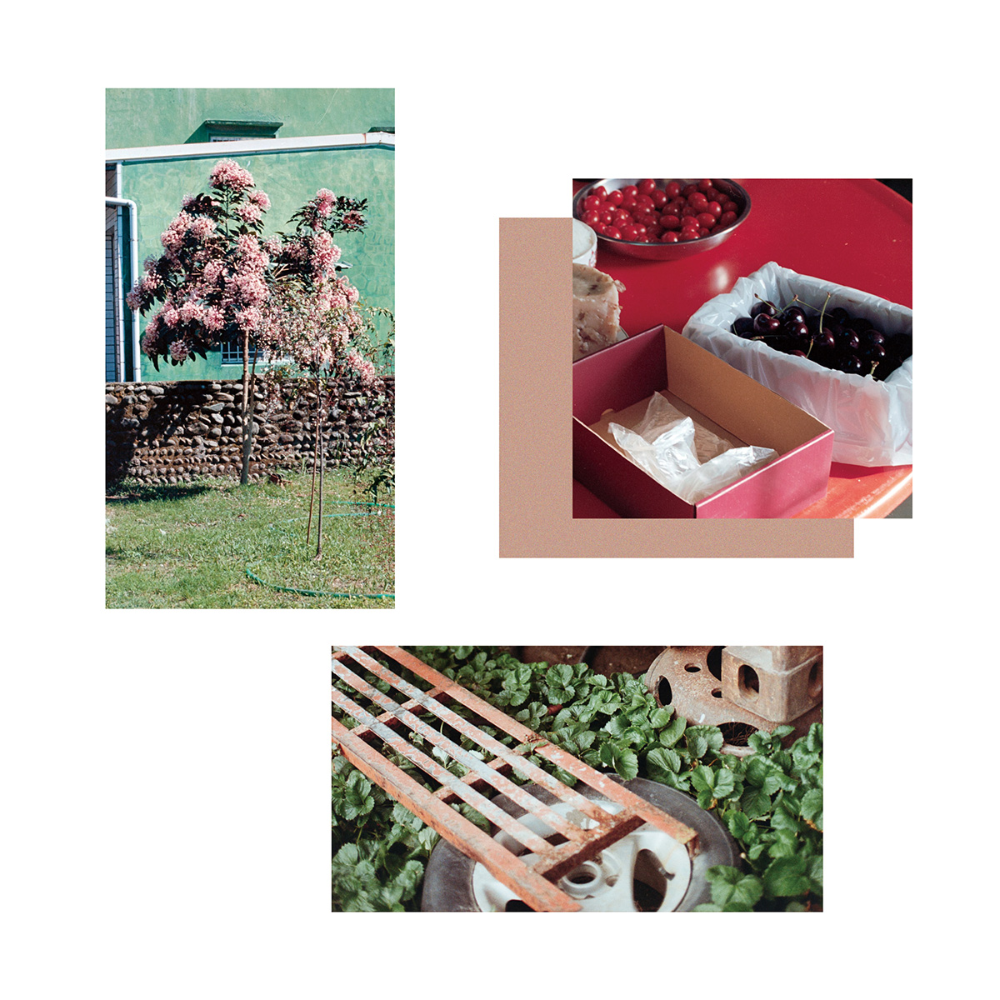

|


 




|
Existence Persistence, 陳尊鐸 @61i.zz 靈感&出發點 「什麼是靈光? 時空的奇異糾纏:遙遠之物的獨一顯現， 雖遠，猶如近在眼前。」 高三考試後，基於興趣開始讀一些攝影理論與哲學的經典， Walter Benjamin 的《迎向靈光消逝的年代》便是其中一本，它彙集了 Benjamin 幾篇重要的攝影理論，包含了 1931 年的《攝影小史》。上頭是其中最令我印象深刻的一段話，從此影響了我往後對攝影的定義與實踐。 引用他這段文字作為我攝影書的開頭，除了想標誌其對我的影響，也想引出我在書中對他提及的「靈光」的實驗過程。而至於是什麼啟發著、驅使著我去做這樣一本攝影集呢?在 20 年的春節假日，依慣例回到老爸的屏東老家過年，在鄉下沒什麼趣事可做，於是我在庭院坐下來看一部叫做《Call me by Your Name》的電影，聽說是由小說改編，相當精彩的一部同志電影。隨著太陽漸漸落下，天空由橘紅色漸變成寶藍色，電影也行至尾聲，這時思緒當然被電影裡的情感獨佔，但聽著片尾曲抬起頭後，我發覺眼裡的一切也有所改變，我開始注意到空氣的溼熱黏膩、民宅的綠色牆面、老舊木門作動的聲音、走廊舊燈泡的光暈，也許是電影裡頭對於環境氛圍的描寫，影響了我的視角，從此我在想起這部作品時，總會模糊的看見屏東在記憶裡的光影與色彩。 這樣子畫面與記憶的連結該如何解釋呢，或者說，僅僅是呈現出來呢?我於是想起靈光這個詞，遙遠的過去在相片上顯現，而後連結到其他記憶裡的光景，從此輪迴不斷，這樣攝影所製造的記憶迴圈與它再現的特質，是我在書中想要以靈光來討論的。當然這只框架在處理我個人的經驗，因此與 Benjamin 在文章中提到的概念有些不同，但希望我的編排與文字能另讀者有勾起自身記憶與畫面連結的共感。 至於為何將這輯影像作品取作《EXISTENCE PERSISTENCE》呢，一詞為存在，另一詞為持續性、持續存在著，攝影從客觀的物理上來看，是為一個短時間的觀點，容許我把它稱為瞬間吧，從觀景窗截下那一個瞬間的點，在時間線上標誌著某物、某事、某人的存在，但若時間繼續推移呢？就如我形容的，它可以引起我們對那畫面主體的記憶與感觸，那份腦海裡模糊的畫面躁動不安，已然超出其照片的物質框架，絲毫不願在被攝下後死去，隨著照片持續存在著。這便是我對靈光的註解、攝影浪漫的哀愁，與這本攝影作品的主軸。 內容簡述 / INTRO / 以寒假與高中好友到嘉義的一日遊影像為主軸，主要是當時在火車上時，其中一位問了我與生命中重要他人的關係，才讓我開始思考一些我很直覺的，愛人與對待人的方法，以及拍照在這之間的角色，也因而很直接的把那天在東石拍下的東西當作序文的基底了。 / AURA / 在蒐集資料的過程中，偶然看見著名女演員 Audrey Hepburn 的照片，大概集中在 1950 年代附近，我是個蠻愛歷史的人，對於那種不曾參與的過去始終抱著好奇心，當然也包括濫情。看著她的身姿與眼神，很難確定眼前這幅相片究竟是活的，抑或是死的，書中我提到了「距離感」之於靈光的影響，拿 Hepburn 的照片來說，我的情感不來自於我認識她，而來自於她很美，且她已死去。我想說的是，肖像的靈光不應只存在這種具有歷史的、有時代距離的照片，至少對我而言。這很大部分驅使了我去拍攝這章肖像的部分，以驗證靈光消逝與否這件事。 總共有兩個篇章，拍攝地點的方面，左邊這系列是在永和河堤步道旁的大草原拍的，每次在下午接近日落時過橋回家都會看見，因為覺得很美就去拍了。右邊這輯則是在景美溪旁，沿著腳踏車道一邊走、一邊聊天拍攝的。過程裡我一直不覺得一定要怎樣拍、擺什麼姿勢來拍，只是當作與他倆出去散步、帶著想將他們與此日此時的光線拍下來的想法，莫名其妙就拍完了，也算是我個人奇怪的攝影哲學吧(笑)。 / TOUCH / 接續上一章的肖像系列，這章是純然的地景，集結了我在家鄉臺中、臺北與寒假遊歷時的作品，共有四個部分，裡頭的視線多關注在一些環境的細節，以系列影像呈現出我對生活中不同地點和時間，與那份令我習慣且安心的熟悉感。比較有趣的是編排的過程，在整理、拼湊影像時會發現自己對於一個地方、一個生活階段重視的部分，而那些通常是生活當下無法即時發現的。 / OUTRO / 結尾部份敘述了我整個評圖的起頭，也就是前面說到看電影的出發點，影像部分則是今年過年在屏東所拍下的畫面，當時會拍下來除了因為這次評圖給我的思考，也跟去年年底過世的祖母有關吧，下次再回到那邊是何時我也無以確定，所以帶著想記錄下來的心情拍下了裡頭的那幾張作品，一方面呼應《Call me by Your Name》對我的啟發，另一方面則是讓屏東長久以來模糊的記憶有了可以訴諸情感的實體。 view on issuu view on instagram |